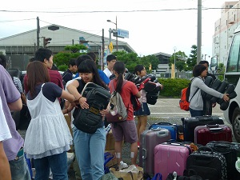
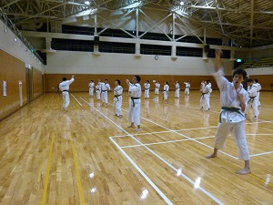
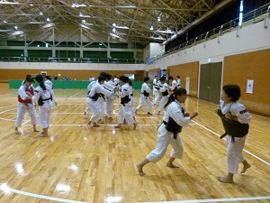
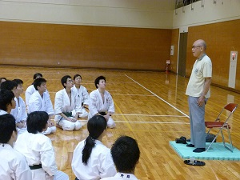
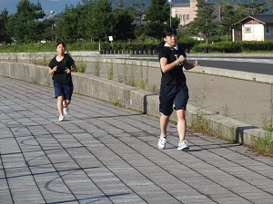
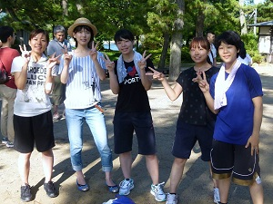
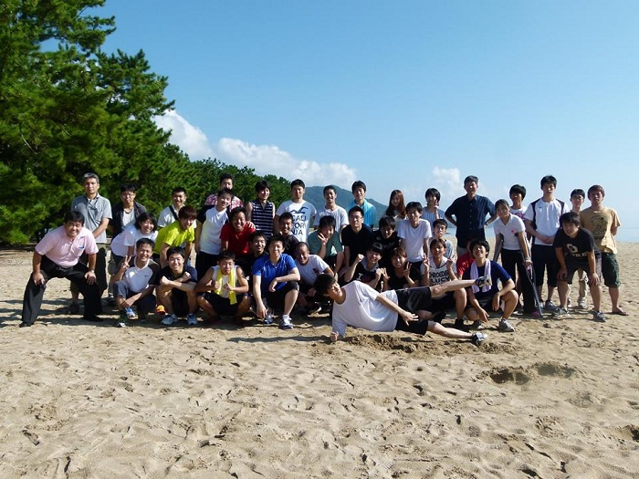

京都大学体育会少林寺拳法部
写真
夏合宿（2014年度）
バスに荷物と防具を積み込んで、さあ夏合宿に行ってきます！今年の行き先は天橋立！
着いたら練習です。力の限り頑張りましょう！
これは胴突きの練習。せっかくの広い体育館だ！相手を吹っ飛ばせ！
夏合宿では毎年、この部の創始者(！)である後神（ごこう）先輩にご講話して頂きます。今年は、「この部からノーベル賞を排出したい」との野望を語っていただきました。が、頑張ります！(汗)
マラソン大会です。天橋立を見ながら走ります。走ります。走ります。
OB・OGさん方がマラソン大会のお手伝いに駆けつけてくれました！ありがとうございます！
マラソン大会の後に現役・OB・OGさん交えての集合写真！いい汗かいた！